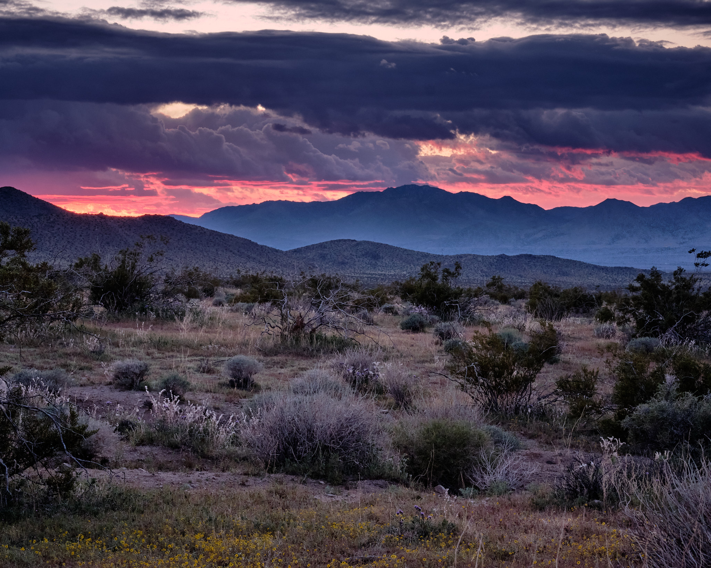
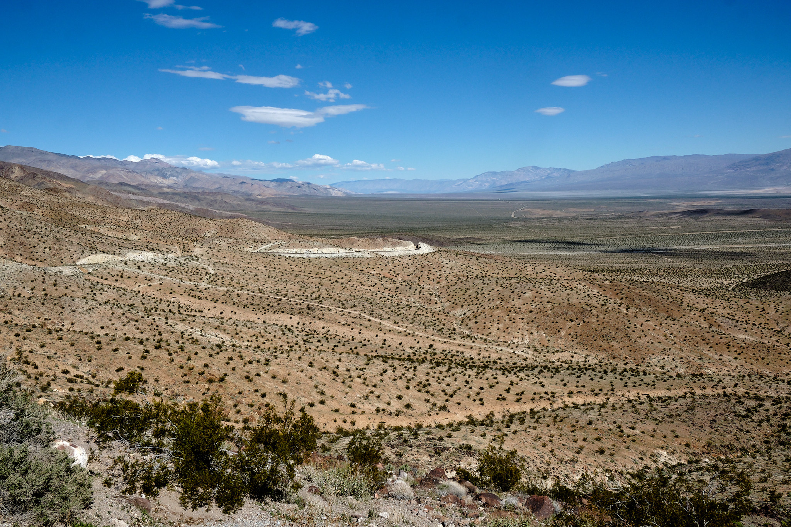
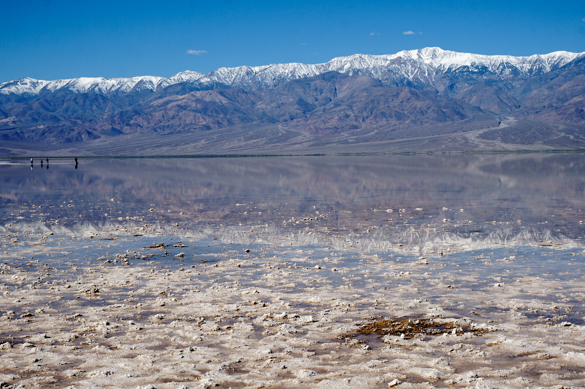

We went out looking for life in Death Valley. We found long vistas of wide valleys and dry mountains;lakebeds that haven’t seen water in ages; and, ghost towns with tales to tell. We crossed the Tehachapi Pass and found some Golden State dreamscapes. Here’s our trip:
Mojave Desert
We first struck gold in the Mojave Desert, when we came across huge superblooms of “Desert Gold” flowers covering the sandy basin. The air was clear and the views were vast. Behind us, we could see the micro-burst storm clouds that had pelted our car with rain in the Tehachapi Pass. Ahead of us, an AirBnB awaited in sunny Ridgecrest, California.
Tammy at the the AirBnB was a wonderful host and directed us to the local Community College, which had the best hill for sunset gazing. We had flowers around us and a red glow over the mountains. Afterwards, we had great Mexican food at a friendly local dive called Olvera’s.

Trona Pinnacles
The next morning, we ventured five miles out a dirt road, crossing old mining railways. Our destination was the Trona Pinnacles, of which the Bureau of Land Management writes: “The unusual landscape consists of more than 500 tufa spires, some as high as 140 feet, rising from the bed of the Searles Dry Lake basin. The pinnacles vary in size and shape from short and squat to tall and thin, and are composed primarily of calcium carbonate (tufa). The Trona Pinnacles have been featured in many commercials, films, and still-photo shoots. The Trona Pinnacles were designated a National Natural Landmark by the U.S. Department of the Interior in 1968 to preserve one of North America’s most outstanding examples of tufa tower formation”

Panamint Valley
The Panamint Valley is a wide open space. Miners came here once, but an unexpected flash flood wiped out the operation in what is now called “Surprise Canyon.” We considered trading in our trusty Audi for a local pickup truck in the ghost town of Ballarat, but even the ghosts had left town. Oddly, this is a great place to watch state of the art fighter jets practice their best maneuvers, as the local “Top Guns” practice from the China Lake Naval Air Station. Why not locate a Naval Air Base in a dry lake bed?
As we reached the northern end of the desert valley, we found another superbloom extending as far as the eye could see.

Furnace Creek
From Panamint Junction, we climbed a pass into Death Valley proper and enjoyed a hike into Mosaic Canyon, which has narrow slot canyons. Then we checked into our hotel in Furnace Creek. You enter the hotel through a decrepit tunnel and board the single elevator car that serves the entire resort. The grounds feature a beautiful oasis with palm trees and a perfect swimming pool, but sometimes the hotel has all the ambiance of a 1950s national park hotel that was last updated in the 1920s. Our room, however, was just one of three rooms on the 4th floor and was delightful. We loved the swimming pool.
Badwater Basin
Badwater Basin is the lowest place on earth, at 282 feet below sea level. Earlier this year, it flooded due to rare atmospheric rivers passing through. Recently, people had been kayaking on the 6-mile long lake that formed from the rain waters. Kayaking was no longer allowed when we arrived, but the lake was still there. What an amazing place! We waded in an infinite expanse of lake in 90 degree heat, with snow covered Telescope Peak rising to a snow-covered 11,331 ft directly in front of us. That peak is two miles higher than where we are standing. 
I also liked the photo below of two people walking down a ridge towards the salt-covered lake basin. It gives a sense of scale.
Next we hiked the Natural Bridge trail to the best natural bridge rock formation in Death Valley. Cool view! See the snow-covered mountains under the arch?
Ashford Mills and Artists Drive
Then we ventured out further in Badwater Basin to an abandoned mining site called Ashford Mills, which was a good place for a picnic lunch. Purple and yellow wildflowers dotted the desert floor, leading up the colorful mountains. Notice the green colors on the mountain; that’s plants growing due to the recent rains. Overall that green is a rare sight.
On the way back, we checked out the otherworldly colors on the mountains at Artist’s Palette.
Views and Springs
The next day, we drove up the mountains on the east side of Death Valley. I like this shot of people hiking the “badlands” of Golden Canyon, a very popular trail. What a strange moonscape for a hike!
Looking in a slightly different direction, I could see three layers of colorful mountains.
Next up to Dante’s View, which overlooks Badwater Basin. I took this abstract image, which zooms down on the valley with the lake drying up in multiple colors.
Our drive took us past a National Wildlife Preserve we never heard of, called Ash Meadows, and we took another dirt road 5 miles into the preserve. Ash Meadows is a high desert area, like the Mojave desert. Its not completely dry because there is a network of pools. The pools are fed by perfectly clear springs that rise up from the limestone below, creating a series of unique oasis spots for local “pupfish” and migrating birds.
Sunset / Sunrise
We caught the sunset at the Mesquite Sand Dunes. The Mesquite also was blooming, with tiny yellow flowers. This sunset gazing spot is the single most popular attraction in Death Valley.
And the next morning, I went back down to Badwater Basin to watch the sun rise.
Leaving Death Valley; Highway 395
Finally it was time for us to leave Death Valley and its lovely 80 degree temperatures; time for a much cooler ski adventure in Lake Tahoe. The drive out from Death Valley went past Panamint Springs again, and then onto a high desert plateau covered in Joshua trees. From there we descended in the fertile Owens Valley, the site of historic California water disputes between Los Angeles and local farmers. Los Angeles won and earned the traffic gridlock to prove it.
Death Valley is the lowest point on earth. Nearby Mount Whitney, at 14,505 feet, is the highest point in the continental US. It covered in beautiful white snow. What a contrast!
Driving up highway 395, we stopped at the Manzanar National Historic Site. From the National Park Service: “In 1942, the United States government ordered more than 110,000 men, women, and children to leave their homes and detained them in remote, military-style camps. Manzanar War Relocation Center was one of ten camps where the US government incarcerated Japanese immigrants ineligible for citizenship and Japanese American citizens during World War II.”
It was very sad to visit an incarceration camp for citizens of our own country who had done nothing wrong. And it feels too possible that our country could some day again herd a portion of its own population into camps out of Xenophobic fear. The curation of the site was very well done; it told the stories of life in the camp through the eyes of those who were detained there. A visit is recommended!
Finally, our last view before leaving the desert for Lake Tahoe. We stopped to see Mono Lake. Mono Lake has Tufa Formations as well, just like Trona Pinnacles, where we started. Those mountains are the Ansel Adams Wilderness – a natural spot for a photo – and a place where we’ve gone backpacking.
It was a fantastic trip!
Here are all the photos. If you want to see bigger images, just click.